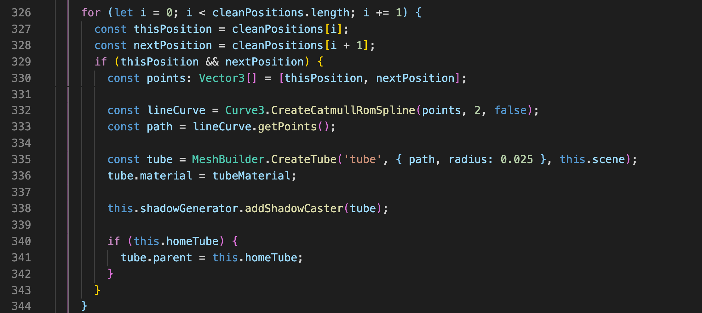
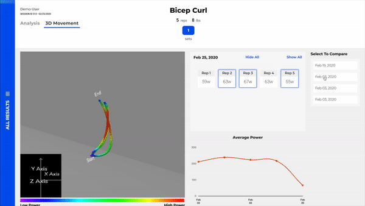
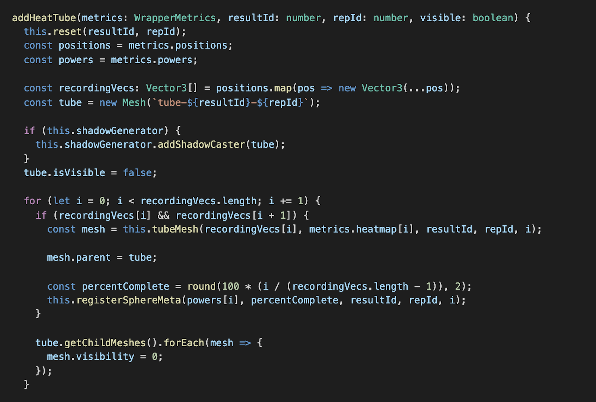
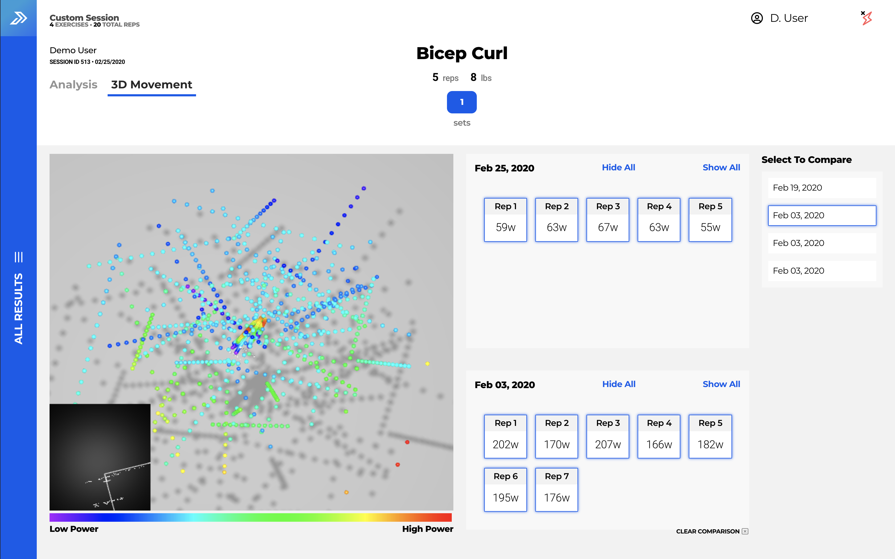
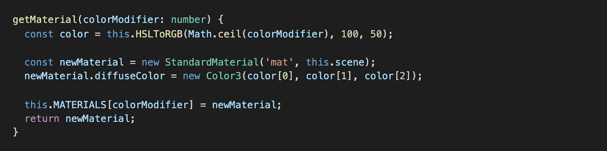
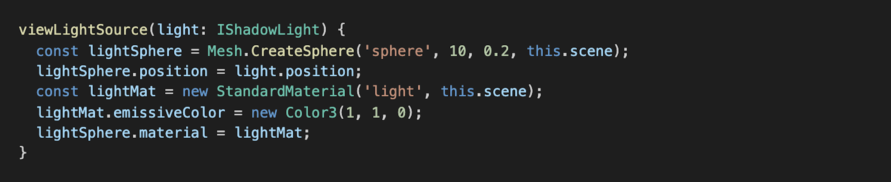
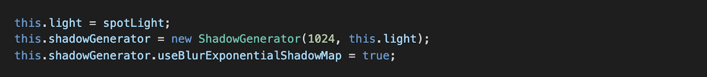

The tube is the most important part of this section as it what connects the 2 spheres to each other. In order to make the path, I needed an array of points. Then I needed to use those points to make a curve which I would then pass into the function that makes the tube. The tube was tricky because I wasn't sure what kind of curve I needed to use. However, upon comparing the production code with Three and the available Babylon's curves, I decided that the CatmullRomSpline was the appropriate curve to use. The tube is comprised of multiple mini tubes, using 2 points at a time. Then I group them all into 1 object by parenting each mini tube to an empty parent object.




This is how I made the heat tubes. I was given a metrics objects which contained the positions for each individual sphere that made up the tube, as well as their recorded power. It's just a matter of looping through all the positions, creating a sphere at that position, and giving it a color based on the power. At the end I make the tube invisible, which will become visible when the user clicks the appropriate button.


The colors of each sphere that makes up the tube is determined using
a number argument. Three and Babylon use different measurements for
color (Three uses HSL while Babylon uses RGB). It was difficult, but
I mangaed to find a formula that could convert HSL to RGB. The reason why
it was difficult was because Three was using values from 0-255 while Babylon
could only accept values from 0-1. Most formulas I found required you to be
using values from 0-255.
After I did find a formula, I added that color onto a material and then added
that material to an array. Once the sphere is created it will pull the appropriate
material from that array.

Lighting the scenes was a challenge since I was not using a GUI and lights are invisible objects. To help with that, I wrote a function that give lights a physical form. It's really simple, I just make a sphere and place it where the light is. I also give it a color.

I used a spotlight to cast shadows since I can't use the ambient lighting (that type of lighting doesn't extend the IShadowLight interface). I instantiated a ShadowGenerator object and passed in the spotlight. Then I allowed the plane (the floor) to be able to receive shadows. I also made the shadows blurry to make them more realistic.
